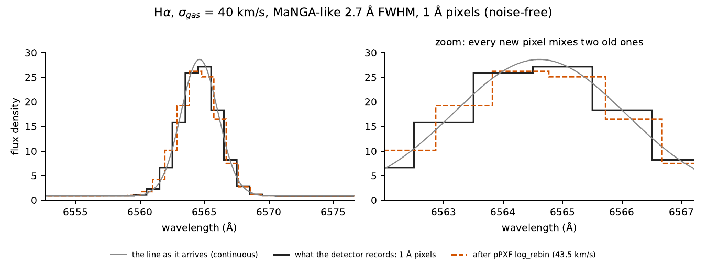
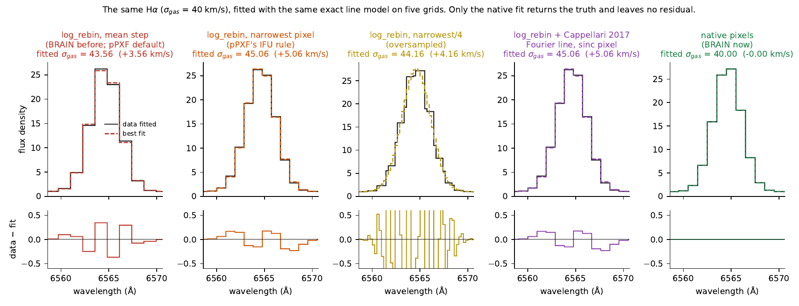
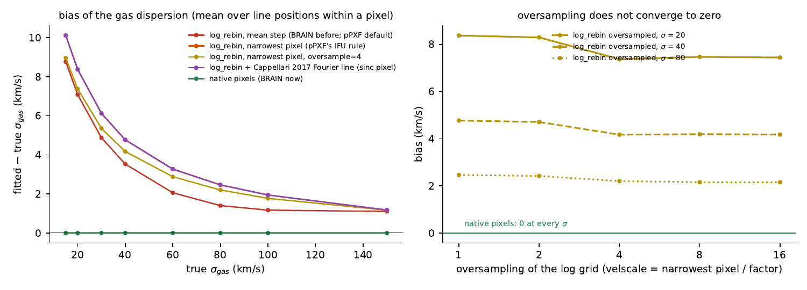
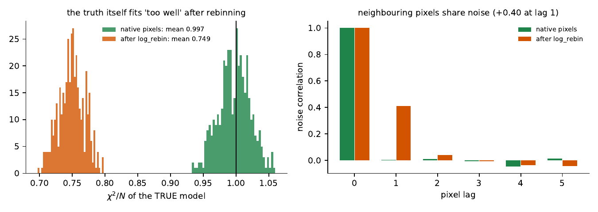
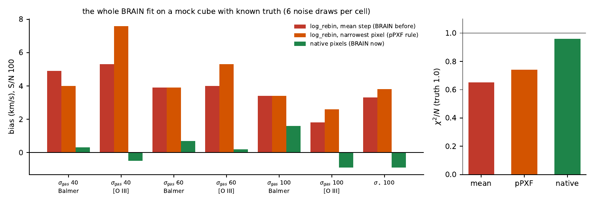
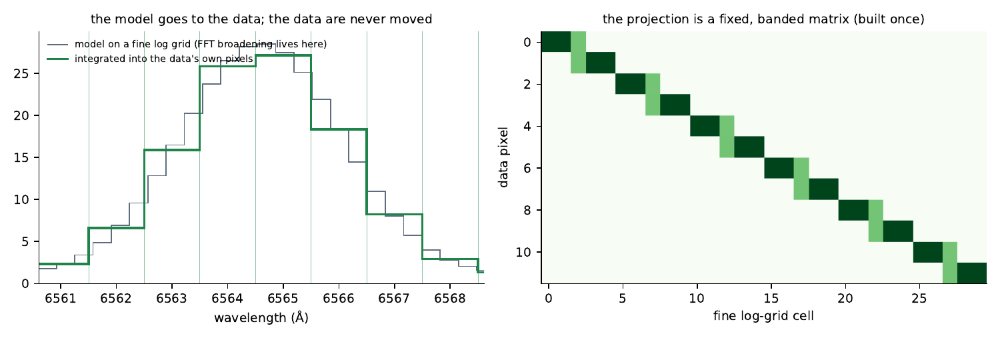

Native pixels#
BRAIN compares the model with the data on the data’s own pixels. It never resamples the spectrum onto another grid, because resampling blurs the lines and correlates the noise, and no change to the model afterwards can undo either. This page shows, with one H\(\alpha\) line, what resampling does, why the remedies proposed for it do not remove it, and how BRAIN avoids it.
What resampling does to the data#
Codes such as pPXF first resample a spectrum onto a grid uniform in \(\ln\lambda\) (log_rebin), because a velocity distribution is then a convolution, cheap by FFT. Each new pixel is the average of the old pixels it overlaps, treated as constant steps: the spectrum is convolved once more, with the old pixel’s top hat, and the information is lost.

An H\(\alpha\) line with \(\sigma_{\rm gas} = 40\) km s⁻¹, seen through MaNGA’s 2.7 Å FWHM: as recorded on 1 Å pixels (steps) and after pPXF’s own log_rebin (version 9.4.5). Each new pixel mixes two old ones, so the peak is lowered and the wings raised.#
Five ways to fit it#
Each fit below uses the same, exact line model (a Gaussian of \(\sigma_{\rm tot} = (\sigma_{\rm gas}^2 + \sigma_{\rm inst}^2)^{1/2}\) integrated over the pixels it is compared with), so any error is the grid’s.

The same noise-free spectrum fitted five ways, with the residuals below each. Only the fit on the native pixels recovers \(\sigma_{\rm gas} = 40.00\) km s⁻¹ with no residual.#
Grid |
Error on \(\sigma_{\rm gas}\) (true 40 km s⁻¹) |
|---|---|
|
+3.6 km s⁻¹ |
|
+5.1 km s⁻¹ |
oversampled four times |
+4.2 km s⁻¹ |
Cappellari (2017): the line built analytically in Fourier space, with the pixel’s sinc |
+5.1 km s⁻¹ |
native pixels (BRAIN) |
0.00 |
Cappellari (2017) makes the model exact on the log grid, including for a line narrower than a pixel, which is the problem it was written for; but the data on that grid are no longer the observed ones, so the bias stays.
How large, and where#

Left: the bias against the true dispersion, averaged over the line’s position within a pixel. Right: oversampling the log grid 2, 4, 8 and 16 times levels off at a non-zero bias.#
The bias is largest for the narrow lines of star-forming gas, +7 to +10 km s⁻¹ at \(\sigma_{\rm gas}\) = 15–20 km s⁻¹, and falls to about 1 km s⁻¹ at 150 km s⁻¹, never to zero. Sampling the resampled spectrum more finely does not converge on the truth, because what was lost is not recovered by looking more closely at what remains.
The noise#

Left: \(\chi^2/N\) of the true model on 400 noise draws, after resampling and on native pixels. Right: the correlation of neighbouring pixels after resampling.#
Each resampled pixel averages the noise of two old ones, so neighbouring pixels share noise (a correlation of +0.40 at lag 1), the scatter is smaller than the propagated errors say, and even the true model gives \(\chi^2/N = 0.75\). On native pixels it gives 1.00. A \(\chi^2\) that is wrong by construction makes every uncertainty and every outlier test built on it wrong too.
In the whole fit#

The complete BRAIN fit on a mock cube with known truth (BC03 stars and narrow lines on 1 Å pixels, S/N 100, six noise draws per cell).#
Resampled at the mean step, the full fit gave \(\sigma_{\rm gas}\) 1.8–5.3 km s⁻¹ high and \(\sigma_\star\) 3.3 km s⁻¹ high; with pPXF’s narrowest-pixel rule, up to 7.6 and 3.8. On native pixels both were within the noise (±1.6 km s⁻¹ and −0.9 km s⁻¹), and \(\chi^2/N\) was 0.96 against 0.65 and 0.74.
How BRAIN does it#

Left: the fine log grid, finer than the narrowest data pixel, and the data pixels. Right: the banded operator \(\mathcal P\) that carries the model from the first to the second.#
The stars still need a log grid, because the velocity distribution is a convolution there. BRAIN builds it fine (one cell per narrowest data pixel or finer), where nothing has been measured and so nothing is blurred, broadens the templates there by FFT, and then integrates the model into each data pixel between that pixel’s own edges:
the integral taken from the cubic through the cumulative model at the four nearest fine-cell edges, so that the flux is conserved exactly. \(\mathcal P\) is a fixed banded matrix, built once per cube. The emission lines need no grid at all: each is a Gaussian integrated over the data pixel’s edges in closed form. The data are compared in the form they were measured, with their own, independent errors, for about 1.2 times the cost of a fit on resampled data.
What pPXF does#
pPXF 9.4.5 applies no correction for its own log_rebin. It relies either on data already sampled in \(\ln\lambda\) by their pipeline (its SDSS example advises against log_rebin there) or on an instrumental FWHM that already includes the resampling (MaNGA’s line-spread-function cubes fold the rectification broadening in; its MUSE and SAURON examples pass the nominal FWHM and then resample, so there the extra blur stays in \(\sigma\)).